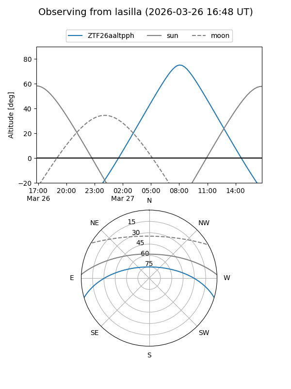
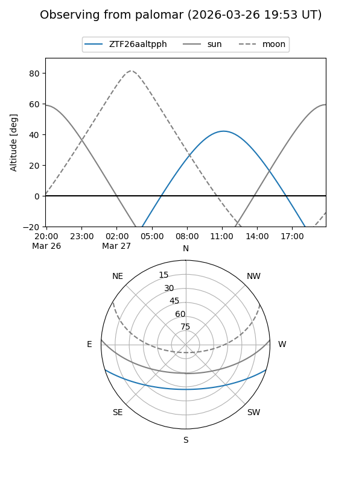

ZTF26aaltpph
Target ZTF26aaltpph at 2026-03-26 12:41
Aliases and brokers:
FINK: link
Lasair: link
ALeRCE: link
alt names
ZTF26aaltpph (ztf,fink_ztf)
Coordinates:
equatorial (ra, dec) = 234.8451,-14.35981
equatorial (HMS+DMS) = 15:39:22.82,-14:21:35.32
galactic (l, b) = (352.6580,+31.85576)
Flags:
Photometry:
last ztfg=16.41
1 ztfg detections
Lightcurve
Visibility


Additional plots